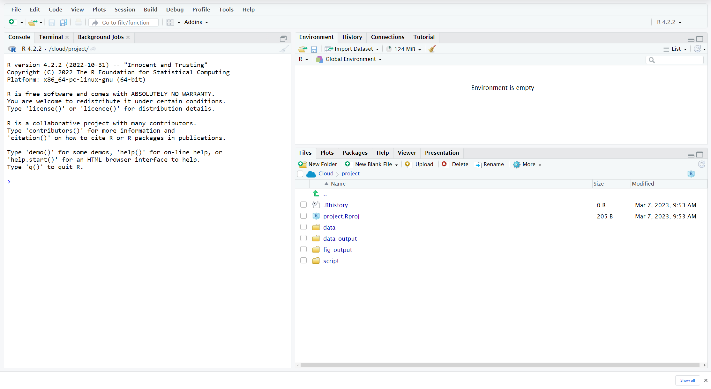
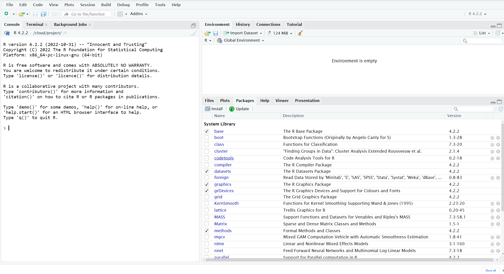
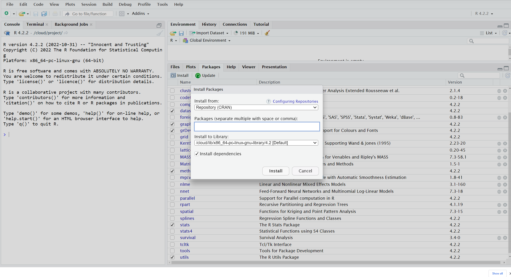
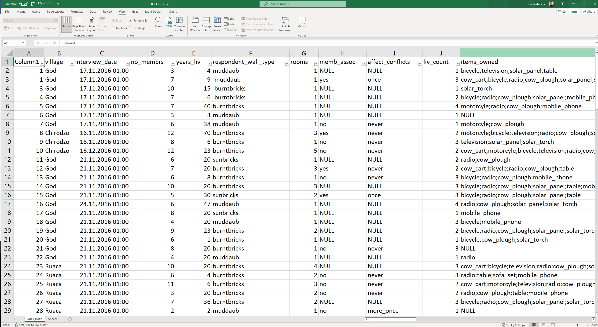
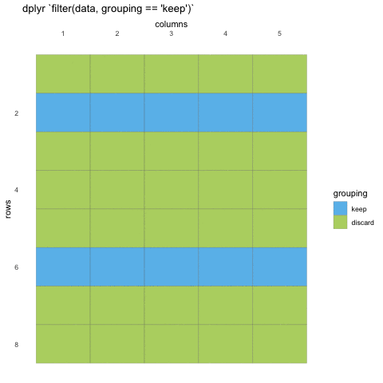
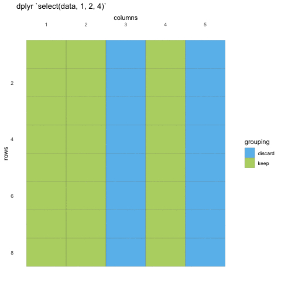

Introduction to R
Digital Scholarship Center
3/13/23
Data science project

The RStudio interface

Create a project

Organizing your working directory
Create the first R script
Click the
Filemenu and selectNew Fileand thenR ScriptSave your script by clicking the
save/disk iconthat is in the bar above the first line in the script editor
Downloading the data
Download the dataset called “
SAFI_clean.csv” https://ndownloader.figshare.com/files/11492171Place this downloaded file in the
data folderyou just created.
Installing packages
Installing packages
Creating an object - assignment
You can create new objects with <-:
Inspect an object
Descriptive names
Object names must
start with a letterOnly contain letters, numbers,
_and.
Recomanded snake_case separate lowercase words with _
Descriptive names - examples
Data types & structure
Types of data
| Type | Definition | Example |
|---|---|---|
| Integer | whole numbers from -inf to +inf | 1L, -2L |
| Numeric/Double | numbers, fractions & decimals from -inf to + inf | 7, 0.2, -5/2 |
| Character/String | quoted strings of letters, numbers, and allowed symbols | “1”, “one”, “o_n_e”, “hello” |
| Logical | logical constant of True or False | TRUE, FALSE, T, F |
Types of data
You can use typeof() to find out the type of value or object
Types of data
Missing data
Data structure
Vectors
Often, we are not working with individual values, but with multiple related values —
vector of values!
We can create a vector of ordered numbers using the form starting_number:ending_numbers
Lets look at the Environment pane in RStudio
Vectors
We can create a vector of any numbers we want using c(), which is a function.
Vectors
Vectors are just 1-dimensional sequences of a single type of data.
Note that vectors can also include strings or character values.
Vectors
The general rule R uses is to set the vector to be the most “permissive” type necessary.
For example, what happens if we combine the vectors x (from earlier) and letters together?
Vectors
Notice the quotes? R turned all of our numbers into strings, since strings are more “permissive” than numbers.
This is called coercion. R coerces a vector into whichever type will accommodate all of the values
Vectors
We can coerce mixed_vec to be numeric using as.numeric(), notice what happens to the character values
Help
RStudio
📝1
Create an object called a that is just the letter “a” and an object x that is assigned the number 8. Add a to x. What happens?
Create a vector called b that is just the number 8 in quotes. Add b to x (from above). What happens?
Find some way to add b to x. (Hint: Don’t forget about coercion.)
Solution 1
Indexing vectors
How do we extract elements out of vectors?
This is called indexing, and it is frequently quite useful
There are a number of methods for indexing that are good to be familiar with
Indexing by position
Vectors can be indexed numerically, starting with 1 (not 0). We can extract specific elements from a vector by putting the index of their position inside brackets [].
Indexing by position
Let’s take a new vector z as an example:
Let’s get just the first element of z:
Get the first and third element by passing those indexes as a vector using c().
##List
Vectors are great for storing a single type of data, but what if we have a variety of different kinds of data we want to store together?
For example, let’s say I want to store the year I am in the PhD program (a number), my name ( a string), and my enrollment status (a logical) in a single object that preserves these different types… 🤔
A vector won’t work, but a list will.
Lists are like vectors in that they are a 1-dimensional object, but they can contain heterogeneous data.
Creating Lists
We can create a list with the list() function
Creating Lists
And, we can give each element of the list a name to make it easier to keep track of them.
$year
[1] 4
$name
[1] "Brendan Cullen"
$enrollment
[1] TRUENotice that [[1]], [[2]], and [[3]], the element indices, have been replaced by the names year, name, and enrollment 👀
Creating Lists
You can see also see the names of a list by running names() on it
Indexing Lists
If we want the actual object stored at the first position instead of a list containing that object, we have to use double-bracket indexing list[[i]]:
Break
Data frames
A data frame is a common way of representing rectangular data -- collections of values that are each associated with a variable (column) and an observation (row). In other words, it has 2 dimensions.
A data frame is technically a special kind of list -- it can contain different kinds of data in different columns, but each column must be the same length.
Data frames
Import data frames
From .csv
- Upload
package tidyverse - Load the library
Import data frames
From .csv
- Import data frame and call it interview
- Inspect database
Presentation of the SAFI Data
SAFI (Studying African Farmer-Led Irrigation) is a study looking at farming and irrigation methods in Tanzania and Mozambique. The survey data was collected through interviews conducted between November 2016 and June 2017. For this lesson, we will be using a subset of the available data. For information about the full teaching dataset used in other lessons in this workshop, see the dataset description.
Inspecting data frames
Size
dim(interviews)- returns a vector with the number of rows as the first element, and the number of columns as the second element (the dimensions of the object)nrow(interviews)- returns the number of rowsncol(interviews)- returns the number of columns
Inspecting data frames
Content:
head(interviews)- shows the first 6 rowstail(interviews)- shows the last 6 rows
Inspecting data frames
Summary:
str(interviews)- structure of the object and information about the class, length and content of each columnsummary(interviews)- summary statistics for each column
Subsetting data frames
Let’s get the first row and third column of interviews using numerical indexing
Subsetting data frames
# A tibble: 3 × 1
rooms
<dbl>
1 1
2 1
3 1Negative Subsetting data frames
# A tibble: 131 × 13
village interview_date no_membrs years_…¹ respo…² rooms memb_…³ affec…⁴
<chr> <dttm> <dbl> <dbl> <chr> <dbl> <chr> <chr>
1 God 2016-11-17 00:00:00 3 4 muddaub 1 <NA> <NA>
2 God 2016-11-17 00:00:00 7 9 muddaub 1 yes once
3 God 2016-11-17 00:00:00 10 15 burntb… 1 <NA> <NA>
4 God 2016-11-17 00:00:00 7 6 burntb… 1 <NA> <NA>
5 God 2016-11-17 00:00:00 7 40 burntb… 1 <NA> <NA>
6 God 2016-11-17 00:00:00 3 3 muddaub 1 <NA> <NA>
7 God 2016-11-17 00:00:00 6 38 muddaub 1 no never
8 Chirodzo 2016-11-16 00:00:00 12 70 burntb… 3 yes never
9 Chirodzo 2016-11-16 00:00:00 8 6 burntb… 1 no never
10 Chirodzo 2016-12-16 00:00:00 12 23 burntb… 5 no never
# … with 121 more rows, 5 more variables: liv_count <dbl>, items_owned <chr>,
# no_meals <dbl>, months_lack_food <chr>, instanceID <chr>, and abbreviated
# variable names ¹years_liv, ²respondent_wall_type, ³memb_assoc,
# ⁴affect_conflicts📝2
Create a tibble (interviews_100) containing only the data in row 100 of the interviews dataset.
Notice how nrow() gave you the number of rows in the tibble?
Use that number to pull out just that last row in the tibble.
Compare that with what you see as the last row using tail() to make sure it’s meeting expectations.
Solution 2
# A tibble: 1 × 14
key_ID village interview_date no_membrs years_liv respond…¹ rooms memb_…²
<dbl> <chr> <dttm> <dbl> <dbl> <chr> <dbl> <chr>
1 80 Ruaca 2017-04-28 00:00:00 5 12 muddaub 1 no
# … with 6 more variables: affect_conflicts <chr>, liv_count <dbl>,
# items_owned <chr>, no_meals <dbl>, months_lack_food <chr>,
# instanceID <chr>, and abbreviated variable names ¹respondent_wall_type,
# ²memb_assocGrammar of data manipulation
Learning dplyr
select() picks variables based on their names.
filter() picks cases based on their values.
mutate() - adds or alters variables that are functions of existing variables
summarise() reduces multiple values down to a single summary.
arrange() changes the ordering of the rows.
filter() - subsetting rows
select() - reduce columns
Reducing the number of columns (or rearranging columns)
Select columns
# to select columns throughout the dataframe
select(interviews, village, no_membrs, months_lack_food)# A tibble: 131 × 3
village no_membrs months_lack_food
<chr> <dbl> <chr>
1 God 3 Jan
2 God 7 Jan;Sept;Oct;Nov;Dec
3 God 10 Jan;Feb;Mar;Oct;Nov;Dec
4 God 7 Sept;Oct;Nov;Dec
5 God 7 Aug;Sept;Oct;Nov
6 God 3 Aug;Sept;Oct
7 God 6 Nov
8 Chirodzo 12 Jan
9 Chirodzo 8 Jan;Dec
10 Chirodzo 12 Jan;Oct;Nov;Dec
# … with 121 more rows# A tibble: 131 × 3
village no_membrs months_lack_food
<chr> <dbl> <chr>
1 God 3 Jan
2 God 7 Jan;Sept;Oct;Nov;Dec
3 God 10 Jan;Feb;Mar;Oct;Nov;Dec
4 God 7 Sept;Oct;Nov;Dec
5 God 7 Aug;Sept;Oct;Nov
6 God 3 Aug;Sept;Oct
7 God 6 Nov
8 Chirodzo 12 Jan
9 Chirodzo 8 Jan;Dec
10 Chirodzo 12 Jan;Oct;Nov;Dec
# … with 121 more rows# A tibble: 131 × 5
village interview_date no_membrs years_liv respondent_wall_type
<chr> <dttm> <dbl> <dbl> <chr>
1 God 2016-11-17 00:00:00 3 4 muddaub
2 God 2016-11-17 00:00:00 7 9 muddaub
3 God 2016-11-17 00:00:00 10 15 burntbricks
4 God 2016-11-17 00:00:00 7 6 burntbricks
5 God 2016-11-17 00:00:00 7 40 burntbricks
6 God 2016-11-17 00:00:00 3 3 muddaub
7 God 2016-11-17 00:00:00 6 38 muddaub
8 Chirodzo 2016-11-16 00:00:00 12 70 burntbricks
9 Chirodzo 2016-11-16 00:00:00 8 6 burntbricks
10 Chirodzo 2016-12-16 00:00:00 12 23 burntbricks
# … with 121 more rowsFiltering rows
# A tibble: 39 × 14
key_ID village interview_date no_membrs years_liv respo…¹ rooms memb_…²
<dbl> <chr> <dttm> <dbl> <dbl> <chr> <dbl> <chr>
1 8 Chirodzo 2016-11-16 00:00:00 12 70 burntb… 3 yes
2 9 Chirodzo 2016-11-16 00:00:00 8 6 burntb… 1 no
3 10 Chirodzo 2016-12-16 00:00:00 12 23 burntb… 5 no
4 34 Chirodzo 2016-11-17 00:00:00 8 18 burntb… 3 yes
5 35 Chirodzo 2016-11-17 00:00:00 5 45 muddaub 1 yes
6 36 Chirodzo 2016-11-17 00:00:00 6 23 sunbri… 1 yes
7 37 Chirodzo 2016-11-17 00:00:00 3 8 burntb… 1 <NA>
8 43 Chirodzo 2016-11-17 00:00:00 7 29 muddaub 1 no
9 44 Chirodzo 2016-11-17 00:00:00 2 6 muddaub 1 <NA>
10 45 Chirodzo 2016-11-17 00:00:00 9 7 muddaub 1 no
# … with 29 more rows, 6 more variables: affect_conflicts <chr>,
# liv_count <dbl>, items_owned <chr>, no_meals <dbl>, months_lack_food <chr>,
# instanceID <chr>, and abbreviated variable names ¹respondent_wall_type,
# ²memb_assocFiltering rows
# filters observations with "and" operator (comma)
# output dataframe satisfies ALL specified conditions
filter(interviews, village == "Chirodzo",
rooms > 1,
no_meals > 2)# A tibble: 10 × 14
key_ID village interview_date no_membrs years_liv respo…¹ rooms memb_…²
<dbl> <chr> <dttm> <dbl> <dbl> <chr> <dbl> <chr>
1 10 Chirodzo 2016-12-16 00:00:00 12 23 burntb… 5 no
2 49 Chirodzo 2016-11-16 00:00:00 6 26 burntb… 2 <NA>
3 52 Chirodzo 2016-11-16 00:00:00 11 15 burntb… 3 no
4 56 Chirodzo 2016-11-16 00:00:00 12 23 burntb… 2 yes
5 65 Chirodzo 2016-11-16 00:00:00 8 20 burntb… 3 no
6 66 Chirodzo 2016-11-16 00:00:00 10 37 burntb… 3 yes
7 67 Chirodzo 2016-11-16 00:00:00 5 31 burntb… 2 no
8 68 Chirodzo 2016-11-16 00:00:00 8 52 burntb… 3 no
9 199 Chirodzo 2017-06-04 00:00:00 7 17 burntb… 2 yes
10 200 Chirodzo 2017-06-04 00:00:00 8 20 burntb… 2 <NA>
# … with 6 more variables: affect_conflicts <chr>, liv_count <dbl>,
# items_owned <chr>, no_meals <dbl>, months_lack_food <chr>,
# instanceID <chr>, and abbreviated variable names ¹respondent_wall_type,
# ²memb_assocFiltering rows
# filters observations with "&" logical operator
# output dataframe satisfies ALL specified conditions
filter(interviews, village == "Chirodzo" &
rooms > 1 &
no_meals > 2)# A tibble: 10 × 14
key_ID village interview_date no_membrs years_liv respo…¹ rooms memb_…²
<dbl> <chr> <dttm> <dbl> <dbl> <chr> <dbl> <chr>
1 10 Chirodzo 2016-12-16 00:00:00 12 23 burntb… 5 no
2 49 Chirodzo 2016-11-16 00:00:00 6 26 burntb… 2 <NA>
3 52 Chirodzo 2016-11-16 00:00:00 11 15 burntb… 3 no
4 56 Chirodzo 2016-11-16 00:00:00 12 23 burntb… 2 yes
5 65 Chirodzo 2016-11-16 00:00:00 8 20 burntb… 3 no
6 66 Chirodzo 2016-11-16 00:00:00 10 37 burntb… 3 yes
7 67 Chirodzo 2016-11-16 00:00:00 5 31 burntb… 2 no
8 68 Chirodzo 2016-11-16 00:00:00 8 52 burntb… 3 no
9 199 Chirodzo 2017-06-04 00:00:00 7 17 burntb… 2 yes
10 200 Chirodzo 2017-06-04 00:00:00 8 20 burntb… 2 <NA>
# … with 6 more variables: affect_conflicts <chr>, liv_count <dbl>,
# items_owned <chr>, no_meals <dbl>, months_lack_food <chr>,
# instanceID <chr>, and abbreviated variable names ¹respondent_wall_type,
# ²memb_assocThe pipe
Ctrl + Shift + M if you have a PC
Cmd + Shift + M if you have a Mac
# standard
interviews2 <- filter(interviews, village == "Chirodzo")
interviews_ch <- select(interviews2, village:respondent_wall_type)
# piped
interviews_ch <- interviews %>%
filter(village == "Chirodzo") %>%
select(village:respondent_wall_type)
interviews_ch# A tibble: 39 × 5
village interview_date no_membrs years_liv respondent_wall_type
<chr> <dttm> <dbl> <dbl> <chr>
1 Chirodzo 2016-11-16 00:00:00 12 70 burntbricks
2 Chirodzo 2016-11-16 00:00:00 8 6 burntbricks
3 Chirodzo 2016-12-16 00:00:00 12 23 burntbricks
4 Chirodzo 2016-11-17 00:00:00 8 18 burntbricks
5 Chirodzo 2016-11-17 00:00:00 5 45 muddaub
6 Chirodzo 2016-11-17 00:00:00 6 23 sunbricks
7 Chirodzo 2016-11-17 00:00:00 3 8 burntbricks
8 Chirodzo 2016-11-17 00:00:00 7 29 muddaub
9 Chirodzo 2016-11-17 00:00:00 2 6 muddaub
10 Chirodzo 2016-11-17 00:00:00 9 7 muddaub
# … with 29 more rows📝2
Using pipes, subset the interviews data to include interviews where respondents were members of an irrigation association (memb_assoc) and retain only the columns affect_conflicts, liv_count, and no_meals.
Solution
# A tibble: 33 × 3
affect_conflicts liv_count no_meals
<chr> <dbl> <dbl>
1 once 3 2
2 never 2 2
3 never 2 3
4 once 3 2
5 frequently 1 3
6 more_once 5 2
7 more_once 3 2
8 more_once 2 3
9 once 3 3
10 never 3 3
# … with 23 more rowsShortcuts